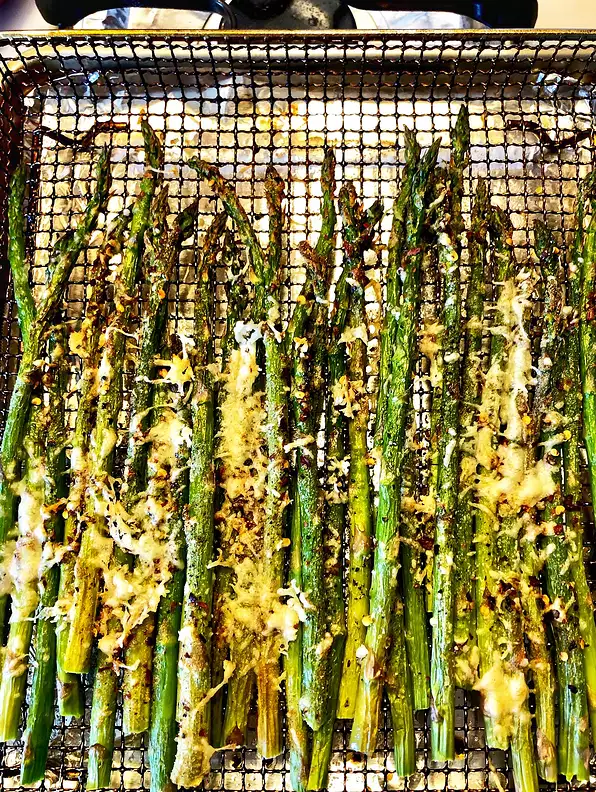

Air Fryer Roasted Asparagus

Description
With air fryer asparagus, you can have this roasted vegetable on your table in less than 20 minutes. This makes the perfect side dish for a weeknight.
Ingredients
- 1 bunch fresh asparagus, trimmed
- avocado oil cooking spray
- ½ teaspoon garlic powder
- ½ teaspoon Himalayan pink salt
- ¼ teaspoon ground multi-colored peppercorns
- ¼ teaspoon red pepper flakes
- ¼ cup freshly grated Parmesan cheese
Steps
- Preheat the air fryer to 375 degrees F (190 degrees C). Line the basket with parchment paper.
- Place asparagus spears in the prepared basket and mist with avocado oil. Sprinkle with garlic powder, salt, pepper, and pepper flakes. Top with Parmesan cheese.
- Air-fry until asparagus spears start to char, 7 to 9 minutes.